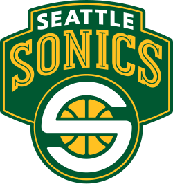
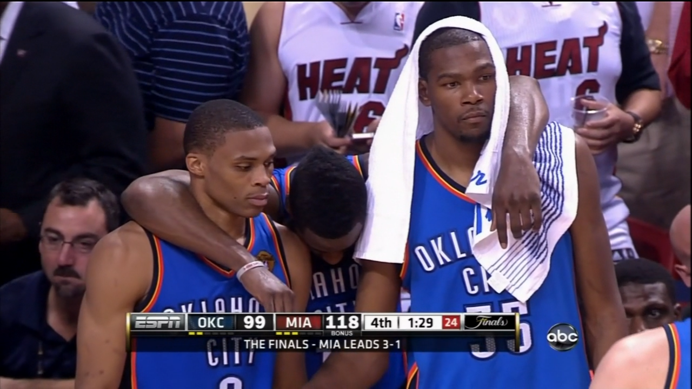

The franchise that is now known as the Oklahoma City Thunder was originally founded as the Seattle SuperSonics in 1967. After four decades in Seattle, the team relocated to Oklahoma City in 2008, marking a significant moment in the city’s sports history. The move brought major professional sports to Oklahoma City for the first time and was met with strong local support. The relocation also marked a new chapter for the franchise, allowing it to establish a fresh identity and direction. Since then, the team has worked to honor its history while building a future in Oklahoma City.
Since relocating, the Thunder have experienced several successful seasons, including multiple playoff appearances, a NBA Finals appearance in 2012, and a NBA Finals win in 2025. In the NBA Finals, Oklahoma City faced the Indiana Pacers in a highly competitive seven-game series, ultimately winning Game 7 to secure their first NBA championship in franchise history at Paycom Center. Guard Shai Gilgeous-Alexander led the way with a dominant performance, earning the Finals MVP award. Team success during this period highlighted the effectiveness of player development and organizational planning. These achievements helped solidify the Thunder’s status as a respected franchise within the NBA.
Throughout its history, the Thunder organization has adapted to changes in leadership, roster composition, and league dynamics. By focusing on adaptability and player development, the team has remained relevant during rebuilding periods as well as competitive runs. The franchise’s history reflects a balance between honoring past success and planning for future growth. This ability to adjust has allowed the organization to stay competitive in an evolving league. Long-term vision continues to guide the team’s decision-making process.


Image sources: Wikipedia, NBA, Medium, NBC